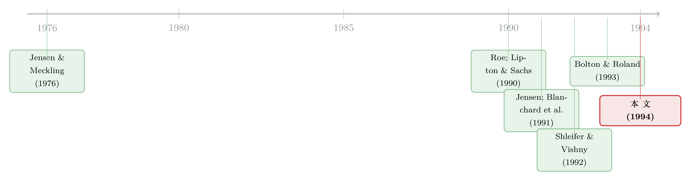

为什么把国企「白送」反而是更聪明的选择？
本文读的是 Boycko, Shleifer & Vishny (1994, Journal of Financial Economics)：在东欧的国企私有化里，「卖」还是「送」，从来不是一道经济学的效率题，而是一道政治可行性的约束题。作者亲历俄罗斯私有化，证明了一个反直觉的命题——把资产几乎免费地分给全体国民（即 大规模私有化(mass privatization)），虽然是被政治逼出来的次优选择，却依然可以在「最大化价值、培育市场、促成公司治理」上做得相当不错。一句话：经济制度的设计，首先由政治塑形；但戴着政治的镣铐，也能跳出一支不难看的舞。
1 一个让经济学家拍桌子的选择
先讲一个让任何一个学过初级微观的人都会皱眉的事实。
1990 年之后，东欧一连串国家——立陶宛、波兰、捷克斯洛伐克、蒙古、俄罗斯——开始做同一件事：把过去归国家所有的、占经济相当大比重的资产，迅速、全面、而且几乎免费地送给全体国民。俄罗斯要私有化的企业超过 25,000 家；捷克斯洛伐克象征性地收一笔约 $35 的「参与费」，而俄罗斯因为民粹色彩更浓，这笔费用只有大约 50 美分。
对一个信奉价格机制的人来说，这简直是暴殄天物。墨西哥私有化的负责人 Jacques Rogozinski 在 1993 年写了一篇评论俄罗斯私有化的文章，标题就叫《伏特加喝多了！》（Too Much Vodka!）。他的潜台词很清楚：资产是有价的，你怎么能白送？正确的做法难道不是开拍卖会，把企业卖给出价最高的人吗？
确实，从效率角度看，「卖」几乎样样都比「送」强。这正是本文要正面回答的张力：既然拍卖在理论上如此完美，为什么这些政府偏偏集体选择了「送」？
作者的答案斩钉截铁——因为在东欧，「卖」根本不是一个可选项。这不是经济学的失败，而是经济学的舞台从一开始就被政治搭好了。
这篇论文的特别之处在于：三位作者（Boycko、Shleifer、Vishny）不是从书斋里推演，而是 1991–1993 年间作为俄罗斯私有化的亲历顾问写下的第一手账。它读起来更像一份「我们当时为什么这么干」的现场复盘，而不是一篇纯理论文章。
2 卖的效率，与卖的不可能
要理解为什么不能卖，先得承认卖的好处有多大。
首先，拍卖在效率上的优势是教科书级的。 当企业在拍卖中被卖给单一买家，平均而言它会落到 估值最高的使用者(highest-value user) 手里——而这恰恰是最有能力从重组中榨出效率收益的人。买家自己掏了真金白银，就有动力去重组，重组不动就转手卖掉。更妙的是，拍卖还顺带最大化了政府收入。在资本市场完美的前提下，拍卖的效率论证几乎无懈可击。
智利和墨西哥就是活生生的成功案例：大部分国企通过竞争性程序卖给私人买家，随后的重组成效斐然，政府也收获了可观的卖地钱。（关于「卖」这条路在新兴市场怎么走，可参见《卖了一半的国企：当国家始终是那个「最大的股东」》。）
接着，一个自然的问题是：既然卖这么好，东欧为什么不卖？
作者给出了两个把东欧和西欧、亚洲、拉美彻底分开的「基本事实」。
第一，东欧几乎所有资产都在国家手里，国民手里能用来买资产的私人财富少得可怜，而要卖的资产却堆积如山。 据 Bolton & Roland (1993) 的估算，波兰和捷克斯洛伐克国民可用于购买资产的财富，仅相当于资产（被人为压低的）账面价值的 1% 到 10%。俄罗斯人也大多没什么钱（虽然 1992 年俄罗斯发生了约 $200 亿 的资本外逃）。反观智利和墨西哥，本就有强大的私人部门和雄厚的私人财富，而且只需要私有化区区几百家企业。
第二——也是更要命的一点——私人财富的分布极度不均，攥着大头的，是黑市商人和前共产党官员。这意味着什么？如果真去开拍卖会，不仅价格会被压得极低，能买得起的也只有寥寥几个、且政治上极不讨喜的买家。
注意作者这里的逻辑转折：低财富本身不是私有化的障碍，它只是意味着资产价格低（影响的是财政收入，不是资源配置）。真正致命的是财富分布——把国家资产以极低价格卖给「共产党人、罪犯和外国人」，这在波兰、俄罗斯、捷克斯洛伐克都是政治上无法接受的。波兰那场被民众视为「贱卖给德国人」的失败私有化，把这一点演示得淋漓尽致。
于是悖论浮现：在东欧，效率最优的「卖」恰恰是政治上最不可行的；而效率次优的「送」，反倒是唯一能落地的方案。
3 「送」的政治魔法
那么「送」凭什么可行？作者的论证里藏着一个非常漂亮的政治经济学机制。
第一层，普惠。 大规模私有化最大的卖点，是让远比拍卖更广泛的人群从私有化中受益。这种「人人有份」的前景，极大地撑起了公众对私有化乃至整个改革的支持。捷克斯洛伐克的私有化赢得了巨大的民意，直接把 Vaclav Klaus 送上了总理之位；俄罗斯总统叶利钦则把「失败政变一周年」的重磅讲话，整篇献给了凭证私有化的发布。政治，在呼唤大规模私有化。
第二层——也是真正关键的一步——是「不可逆的承诺」。 把可以兑换成股份的 凭证(voucher) 发到每一个国民手里，本身就是一个极强的、要把资产私有化进行到底的承诺。在俄罗斯，凭证一发，公众辩论的焦点就从「要不要私有化」彻底转向了「该怎么私有化」。
这一步的妙处，在 1993 年 1 月得到了验证：当一个改革色彩淡得多的政府上台，它也停不下来——因为一旦停手，亿万国民手里的凭证就会瞬间变成废纸。相比之下，直接低价卖给少数富人的企业，反而会成为「再国有化」的诱人靶子，政府想喊停、想倒退都容易得多。换句话说，「送」给私有化上了一道任何人都撕不掉的锁。
第三层，参与感与选择。 只要凭证允许人们自己挑选投向哪些资产，公众的兴趣和热情就被点燃了。Frydman & Rapaczynski (1991a,b) 早就指出：选择会激发参与，而单纯把一张「号称是资产凭证」的纸塞给你、让你压在枕头底下，激发不出同样的热情。在俄罗斯，私有化一度成了报纸文章最常见的主题，甚至是流行榜上排名第五的歌曲的主题。
这就是「送」的政治魔法：它用普惠换来了民意，用凭证锁死了倒退的退路，用选择点燃了参与。三者合一，让一个经济次优的方案，变成了政治最优且自我维持的方案。
4 但「送」会不会把效率全葬送了？
讲到这里，一个尖锐的反问该出场了：效率，是不是已经做了政治可行性的牺牲品？ 作者的回答是——不。
第一个效率优势是速度。 卖需要准备、估值、设计繁琐的拍卖程序；送则跳过了大部分步骤。作者算了一笔账：如果靠「一个月卖几家」的方式来私有化俄罗斯（甚至波兰）的企业，得花上一个世纪。而资产在国家手里多待一天，就多停滞一天——在俄罗斯，转型期还伴随着管理层对国有资产的大规模盗窃。速度越重要，大规模私有化就越显出它的好。
但真正让这篇论文站得住脚的，是它对公司治理的处理。 这恰恰是批评者攻击大规模私有化最狠的地方：股份分散到千万小股东手里，没有大股东(blockholder)，没人监督经理，企业岂不是要继续被「政治化」、继续烂下去？
作者承认这个担忧是真的——所以他们要展示的是：捷克、俄罗斯、波兰各自用了不同的制度设计，去对冲股权分散的弊病；而每一种设计，都同时被本国的经济逻辑和政治现实塑形。 这才是全文的核心论点落点：制度细节是政治的产物，但好的细节能在政治约束下挤出治理。
我们一个一个看。
先说一个共同的政治硬约束：经理留任。 三个国家都没有任何一个方案试图把控制权从在任经理手里完全夺走。这不是大规模私有化的错，而是因为现存管理层政治上太强势，任何想绕过他们的尝试都可能让整个私有化翻车。无论用什么策略，短期内经理都必须被留下——这是每个国家的改革者都撞上的同一堵墙。（这背后的逻辑，正是 Jensen & Meckling (1976) 式的代理问题；关于这条主线的当代回望，可参见《债务这副药，为什么不能全吃？》。）
既然经理动不了，治理就只能靠外部大股东来补。三国的分流就此展开：
-
俄罗斯：约
80%的股份通过凭证分配（50%给内部人，30%给外部人）。经理团队平均最终持有约13%的股份（来自 Joseph Blasi 与 Katarina Pistor 的企业调查）——适度的管理层持股，按 Jensen & Meckling (1976)，本身就能大幅缓解代理问题。同时，俄罗斯鼓励 共同基金(mutual funds) 用凭证换基金份额、再去凭证拍卖里吃下大块股权；由于股票市场极不流动，基金被「锁」在集中持股里，只能去监督经理而非倒手交易（这正是 Coffee (1991) 与 Bhide (1993) 所论的逻辑）。在大规模私有化的头六个月，俄罗斯的基金已经在一些公司试图换掉经理，少数成功。 -
捷克斯洛伐克：
50%–70%的股份卖给凭证。它采取了激进的亲大股东立场——私有化部公开放话，会偏爱那些引入主动投资者的方案，外部人被鼓励与经理竞争提案。结果许多捷克公司在共同基金之外还出现了大股东，其中不少是外国人。治理问题因此被相当程度地解决了。作者点破了关键：这份成功，靠的是捷克管理层游说集团相对弱势，以及政府「若经理方案不引入主动投资者就接受非经理方案」这一威胁的可信度。 -
俄罗斯为什么不能学捷克？ 因为经理的政治影响力太大，政府无法威胁「不引入外部投资者就把经理踢出局」。于是俄罗斯的做法只能更迂回：让凭证可自由交易，潜在大股东得以囤积大块凭证、在凭证拍卖中拿下大块股份。ZIL 卡车、乌拉尔的 URALMASH 重型机械厂、Vladimir 拖拉机厂等最大的几家企业，最终都引入了对治理感兴趣的大股东。
-
波兰：走了第三条路，完全不靠「人换股」的凭证。政府计划设立
10只由有重组经验的外国人管理的共同基金，行政性地把约400家国企的股份分配给它们：每家企业由一只领投基金持有33%的大块，其余九只各持3%，合计60%的大块就此分发出去。最后每个波兰国民再获得这十只基金各自的一份可交易份额。波兰因此同时做到了「人人有份」和「制造大股东」。
这里有一个被作者反复强调、却容易被忽略的设计点：俄罗斯把凭证设计成可自由交易，捷克则不可。 这看似技术细节，却是全文「政治塑形制度」论点最锋利的证据——同一个治理目标（催生大股东），因两国管理层势力强弱不同，被逼出了两套完全不同的工具。
所以，把四国放在一起看，一个统一的画面浮现了：它们都在政治容许的最大限度内，去促成大股东；谁也没敢「强制」大股东，于是大股东在一些公司出现、在另一些没有。 作者的判断很克制——这些方案，已经在私有化者所面对的政治约束内，走到了它们能走的最远处。
5 凭证拍卖：一道写给「一无所知者」的算术题
如果说前面是政治经济学，那么本文唯一接近「模型」的部分，是凭证拍卖的设计。它的精彩之处，恰恰在于它不是一道标准拍卖题。
设计大规模私有化的拍卖，要满足一堆寻常拍卖里根本不会出现的约束：拍卖必须行政上足够简单，让官僚真的能操作；必须让对企业和拍卖一无所知的千百万投资者也能出价；这些投资者作为整体必须能拿到股份，不能感觉自己被专业人士系统性挤出；而且小投资者付出的价格不能高于专业人士。
问题出在哪？东欧的资产账面价值毫无信息含量（没有按通胀调整）。即便你知道一家公司的账面价值，它的市场价值也可能在零到账面值的 100 倍之间任意游走。如果让毫无信息的小投资者去提交「股数 + 最高价」的标准竞价，他们多半会把价格锚定在账面值上，结果是：好公司一股拿不到，坏公司却堆满手——一场针对私有化的政治反弹就此埋下。
于是有了一个绝妙的简化提案：不让投资者报价，只让他们提交「愿意投入某家公司的凭证数量」。 每张凭证最终能买到多少股，由这家公司的「股数供给 ÷ 投入的凭证总数」自动决定。
用论文里的原始算例来说最清楚：
$$ \text{shares per voucher} = \frac{\text{shares offered}}{\text{total vouchers submitted}} $$
把它拆开看每一块的含义：
代入论文的数字：若一家公司拿出 1,000 股、共有 40 张凭证投进来，则每张凭证买到 25 股；若投进来的是 4,000 张，则每张凭证只买到 1/4 股。
这个设计的精髓在于：它默认每只股票的需求曲线是单位弹性的——投资者想花掉的，是一个固定的量（他手里的凭证），投向他最中意的那只股票。它一举满足了前面所有约束：竞价规则极其简单；每个投进凭证的人都保证能拿到些股份；越多人想要的好公司，每张凭证换到的股越少，于是「热门股稀释、冷门股便宜」自动成立，不需要任何官僚去给企业定价，也就堵死了任意性、拖延与腐败。
而可交易的凭证在这里又扮演了第二重角色：它让潜在大股东得以低成本地囤积大块凭证、在拍卖中拿下大块股份。没有流动的凭证市场，俄罗斯式的「靠凭证拍卖催生大股东」就无从谈起。作者由此把两条线收束到一起——凭证的可交易性，既改善了小持有人的待遇，又培育了公司治理，还顺带催生了俄罗斯第一个活跃而流动的金融市场。
6 文献脉络
把这篇论文放回它的坐标系，脉络就清楚了。
最上游，是代理理论的源头。 Jensen & Meckling (1976) 奠定了「管理层持股缓解代理成本」的基石——这正是本文为「让经理拿 13% 股份」辩护时所依赖的逻辑（相关回望见《现金为什么一定要「还」出去？》）。
接着，是一条「政治塑造金融制度」的暗线。 Roe (1990) 与 Jensen (1991) 研究美国公司控制权市场如何被政治压力形塑——本文开宗明义地说，自己正是这一工作的「东欧补全」。区别在于：美国的变化是渐进的，而俄罗斯的资产从国有到私有的迁移规模空前巨大，政治力量的影响因此格外清晰可见。

然后，是同时期密集的私有化政策设计文献。 Lipton & Sachs (1990)、Blanchard et al. (1991)、Frydman & Rapaczynski (1991a,b)、Bolton & Roland (1993) 描述、倡导、批评并改进了这些方案——本文反复引用它们来界定私有化的四大经济目标（去政治化、资产配给最优使用者、建立治理、求快），以及「选择激发参与」这一关键洞见。与此同时，Kikeri, Nellis & Shirley (1992) 与 Megginson, Nash & van Randenborgh (1992) 提供了「卖」这条路在全球范围内成功的经验证据，构成本文「卖确实更有效率」论断的实证后盾。
再往里，是治理机制的微观支撑。 Shleifer & Vishny (1992) 解释了为何买家融资约束会压低拍卖价格、稀释股权集中度；Coffee (1991) 与 Bhide (1993) 论证了在流动性匮乏时，大股东只能靠监督而非交易来发挥作用——这正是本文解释俄罗斯共同基金行为的理论支点。
本文（1994）所处的位置，是把这两条线——「私有化的经济目标」与「政治塑造制度」——拧成一股：它不推荐任何具体方案（作者把这件事留给了 Boycko & Shleifer (1993) 和 Shleifer & Vishny (1993)），而是用俄罗斯、捷克、波兰的对照，证明一个一般性命题：经济制度的设计被政治因素决定性地塑形，但令人满意的经济结果仍可在政治约束下达成。
7 评论与延伸（Q&A + 研究方向）
(a) 几个可能的疑问
Q：这到底是一篇实证论文，还是一篇政策回忆录？识别从何谈起？
坦白说，它更接近一篇有第一手材料的解释性论文，而非现代意义上的因果识别研究。全文几乎没有回归、没有 t 值，结论靠的是跨国比较（俄/捷/波）和作者的亲历叙述。它的「识别」是叙事性的：用三国管理层势力强弱的差异，去解释三套制度设计的差异。这是优点也是软肋——说服力强，但无法排除「事后合理化」。
Q：「卖更有效率、送是次优」——这个前提本身可靠吗？
作者引用了 Kikeri, Nellis & Shirley (1992) 与 Megginson, Nash & van Randenborgh (1992) 等全球证据，支撑「卖在成熟市场普遍成功」。但他们也诚实地承认，这个效率优势的成立依赖「资本市场完美」；一旦买家有融资约束（Shleifer & Vishny, 1992），拍卖价格会偏低、股权会过于分散，卖的优势就被削弱了。所以「卖更优」是一个有条件的命题。
Q：把凭证设计成可自由交易，难道不会让穷人被坑、被低价收走凭证吗？
这正是作者直面的质疑。他们的回答有三层：其一，即便禁止，凭证黑市也会照样出现（俄罗斯就是如此），而黑市里穷人拿到的价格更糟；真正的保护是竞争性、开放的凭证市场——能在多处比价、买家相互竞争，价格才会大致公允。其二，可交易性让潜在大股东得以低成本囤积大块，从而改善治理。其三，凭证市场催生了俄罗斯第一个活跃的金融市场，凭证日价还成了对改革前景的「无偏公众评估」。
Q：本文说「经理必须留任」是政治约束而非方案选择——这个论断会不会太方便了，把所有治理失败都归给政治？
这确实是全文最需要警惕的地方。「经理留任是政治硬约束」是一个难以证伪的论断：凡是治理没做好，都可以说「政治不允许做得更好」。捷克与俄罗斯的对比给了它一些经验支撑（捷克管理层弱、就能更激进地引入外部大股东），但严格说，这仍是相关而非因果。
Q：这套「单位弹性需求」的凭证拍卖，假设是不是太强了？
是的，它人为地假装每只股票的需求曲线是单位弹性的（投资者想花掉固定数量的凭证）。这是一个为了「行政简单 + 小投资者可及」而刻意做出的牺牲——代价是价格未必精确反映企业相对价值。作者自己也指出，理想情况下还需要让有信息的专业投资者去影响拍卖价格，价格才能真正承载效率信号。设计因此是一场「可及性」与「价格信息量」之间的权衡。
Q：俄罗斯式的「内部人拿 50%、经理平均 13%」，长期看会不会把治理锁死？
作者持谨慎乐观：随着二级交易展开、工人逐步卖出股份，所有权会进一步集中，大股东会更多地浮现。但这只是一个预期，论文写作时（1994 年）证据还很初步（"preliminary anecdotal evidence"）。后续这是否兑现，正是这篇论文留给后人验证的核心问题。
(b) 几个可能的研究问题与提案
1. 凭证可交易性 → 长期所有权集中度与企业绩效
【经济故事】本文最干净的一个跨国差异，是俄罗斯凭证可交易、捷克不可。理论预测：可交易性应当催生更集中的大股东，从而带来更强的治理和更好的长期绩效。 【可行性】中。需要俄/捷/斯洛伐克私有化企业的长期面板（所有权结构、ROA、生存率）。挑战在于两国企业的初始条件差异巨大，难以做干净的双重差分；但「凭证可交易性」作为一个明确的制度断点，至少提供了一个有意思的比较基准。
2. 外资大股东的「治理红利」能否被量化？
【经济故事】捷克方案明确鼓励外部（常常是外国）主动投资者，俄罗斯则因管理层阻力只能迂回。一个自然的问题是：引入外国大股东的企业，其后续重组、投资与生产率，是否系统性地优于纯内部人控制的企业？这与「外资究竟是蝗虫还是良医」的大辩论直接相关（见《外资真是「蝗虫」吗？》）。 【可行性】中。可用捷克私有化基金的持股数据 + 企业绩效。识别难点是外资的选择性进入——它们可能本就挑了好公司，需要用「私有化部偏好主动投资者」这一政策冲击作为工具变量。
3. 把「政治可行性约束」写成一个可检验的形式模型
【经济故事】本文的核心命题——制度设计 = 在政治约束下最大化经济目标——目前停留在叙事层面。能否把「管理层游说强度」「公众参与度」「再国有化威胁」作为参数，建一个最优私有化机制设计模型，预测在何种政治参数下会内生出「卖 / 凭证不可交易 / 凭证可交易 / 基金分配」中的哪一种？ 【可行性】中偏低。理论上 doable，且学术价值高；但要让模型的预测与四国（甚至更多转型国）的真实选择对上，需要把「政治势力」操作化为可测量的变量，这一步相当困难。
4. 凭证私有化作为「信用市场前史」：早期股权分散如何影响后来的公司发债能力？
【经济故事】本文聚焦股权治理，但留下一个公司债/信用市场的延伸：私有化造成的初始所有权结构（分散 vs. 集中、有无大股东监督），会不会塑造这些企业后来进入债券市场、获得信用的能力？大股东监督越强，债权人越放心，融资成本应当越低。 【可行性】低。诱人但数据极难——转型经济早期的公司债市场本身就发育不全，企业层面的发债与利差数据稀缺，识别初始所有权的长期信用效应几乎不可能做干净。诚实地说，这更像一个值得长期关注的方向，而非眼下可执行的项目。
5. 「不可逆承诺」机制的外部效度
【经济故事】本文最深刻的洞见之一，是「把凭证发到人手里 = 一个谁也撕不掉的私有化承诺」。这个「分散化即承诺」的机制能否推广到别处？例如，广泛分散的散户持股，是否也让一项改革（或一家公司的某项政策）更难被逆转？ 【可行性】中。可借用现代散户持股数据，检验「散户持股越分散的公司，其反收购、再国有化、政策逆转越难发生」。识别需要找到散户持股的外生变动（如指数纳入、拆股带来的散户涌入），与本文的逻辑形成跨时空呼应。
我的判断
贡献。 这篇论文的价值不在某个系数，而在它把一个被效率派经济学家普遍鄙夷的方案（白送国企）翻译成了一个逻辑自洽的政治经济学故事：当财富分布极度不均、卖必然意味着「贱卖给共产党人、罪犯和外国人」时，「送」不是退让，而是唯一能锁死改革、动员民意、并在政治容许的边界内挤出治理的可行解。它对「凭证为何要可交易」「经理为何必须留任」「俄/捷/波为何走三条路」的解释，至今仍是理解转型经济制度选择的经典文本。更难得的是作者的诚实——他们从不假装「送」比「卖」更有效率，只论证它在给定约束下足够好。
对识别的担忧。 最大的软肋是它几乎没有可证伪的识别。「经理留任是政治硬约束」「这些方案已走到政治边界的最远处」这类论断，方便得近乎万能——任何治理失败都能被归因于政治。跨国比较（俄/捷/波）提供了宝贵的变异，但三国初始条件差异太大，无法支撑因果推断。本质上，这是一篇用一手经验讲透机制的论文，而不是一篇用数据钉死因果的论文——读它要带着这份分寸感。
后续想看到什么。 我最想看到的，是用三十年后的「后视镜」去检验它的核心预期：可交易凭证是否真的催生了更集中的所有权？引入外资大股东的捷克企业，长期绩效是否真的更好？俄罗斯那 50% 的内部人持股，最终是走向了集中与重组，还是固化成了「经理资本主义」？这篇论文写于私有化的现场、证据还只是 "preliminary"；它提出的每一个机制，都是一道留给后人去对账的题。
参考文献
- Blanchard, O., et al. (1991). Reform in Eastern Europe. MIT Press.
- Bhide, A. (1993). The hidden costs of stock market liquidity. Journal of Financial Economics 34(1), 31–51.
- Bolton, P., & Roland, G. (1993). The economics of mass privatization: Czechoslovakia, East Germany, Hungary and Poland. Economic Policy 7(15), 275–309.
- Boycko, M., & Shleifer, A. (1993). The politics of Russian privatization. In Post-Communist Reform: Pain and Progress. MIT Press.
- Boycko, M., Shleifer, A., & Vishny, R. W. (1994). Voucher privatization. Journal of Financial Economics 35(2), 249–266.
- Coffee, J. C. (1991). Liquidity versus control: The institutional investor as corporate monitor. Columbia Law Review 91(6), 1277–1368.
- Frydman, R., & Rapaczynski, A. (1991a, b). Markets and institutions in large-scale privatization. In Reforming Central and Eastern European Economies. World Bank.
- Jensen, M. C. (1991). Corporate control and the politics of finance. Journal of Applied Corporate Finance 4(2), 13–33.
- Jensen, M. C., & Meckling, W. H. (1976). Theory of the firm: Managerial behavior, agency costs and ownership structure. Journal of Financial Economics 3(4), 305–360.
- Kikeri, S., Nellis, J., & Shirley, M. (1992). Privatization: The Lessons of Experience. World Bank.
- Lipton, D., & Sachs, J. (1990). Privatization in Eastern Europe: The case of Poland. Brookings Papers on Economic Activity 1990(2), 293–341.
- Megginson, W. L., Nash, R. C., & van Randenborgh, M. (1992). The financial and operating performance of newly privatized firms. Journal of Finance 49(2), 403–452.
- Roe, M. J. (1990). Political and legal restraints on ownership and control of public companies. Journal of Financial Economics 27(1), 7–41.
- Shleifer, A., & Vishny, R. W. (1992). Liquidation values and debt capacity: A market equilibrium approach. Journal of Finance 47(4), 1343–1366.
- Shleifer, A., & Vishny, R. W. (1993). Corruption. Quarterly Journal of Economics 108(3), 599–617.